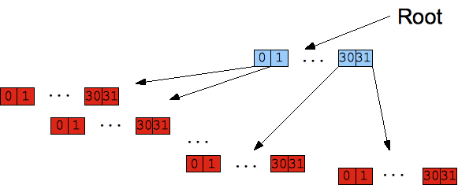

Lecture 2: Scaling Computation, Part II, and Course Project Rebooted
Software Transactional Memory (STM)
- A concurrency model for safely mutating values.
- Safer alternative to lock-based concurrency.
- Can complement Actor concurrency.
- Brings database-like transactions to memory.
History: A Few Milestones
| 1986 | Tom Knight proposes hardware-based transactional memory. |
| 1995 | Nir Shavit and Dan Touitou first propose STM. |
| mid-2000’s | Added to Haskell. |
| 2008 | In the first release of Clojure. |
Some Notable Implementations
| Language | Name | Notes |
| Haskell | N.A. | Built into the language. Pioneering implementation copied by others. |
| Clojure | N.A. | Built into the language. Really driving interest in STM and Clojure! |
| Java and Scala | Multiverse | Used by Akka. |
Many others listed on the STM Wikipedia page.
ACID
Properties of database transactions:
- A: Atomicity
- C: Consistency
- I: Isolation
- D: Durability
Atomicity
A transaction behaves as if it happens in one, uninterruptible, “all or nothing” step.
- If any internal step fails, the whole transaction is rolled back to the beginning state.
- Prevents inconsistent state changes from persisting.
- Transactions can fail for many reasons: bugs, resource exhaustion, process or hardware failure, etc.
Atomicity: Example
Scenario: A transaction T will transfer $100 from account #1, with starting balance $1100, to account #2, with starting balance $900. If successful, both accounts must have $1000.
- T deducts $100 from account #1.
- T fails to add $100 to account #2, because it is already in another transaction.
- Rollback: T restores the balance of account #1 to $1100.
If the transaction didn’t roll back, Account #1 would have $1000 and Account #2 would have $900.
Consistency
The state is always consistent and any transaction takes the database from one consistent state to another (as understood by the database).
Example consistency rules:
- Types must be respected (e.g., no strings are allowed in an integer location).
- References to other entities must be valid. (referential integrity)
Doesn’t cover things the database doesn’t know about, like business rules enshrined in Java…
Consistency: Example
Scenario: A bank customer has two savings accounts, but decides to close one of them.
Suppose the customer records are in one database table and the account records are in a separate table. It’s common to use a third join table to map the relationships between M customers and N accounts.
So, in this scenario, the join table must be updated to remove mappings between the customer and the closed account.
Side Note: Is Data Ever Deleted?
In many real-world scenarios, you cannot delete data, just make it “obsolete”. The problem is that sometimes you need to undo past actions (e.g., the customer changes her mind and wants to reopen that savings account) and sometimes you need historical data for regulatory and other reasons.
Scenario: The customer who closed one of her savings accounts wants to print out all the statements for the year, for tax purposes.
If you deleted the closed account, such records would be lost.
Isolation
Modified data in transaction A that hasn’t been committed is invisible to other transactions.
Necessary to preserve data integrity and consistency.
Isolation: Example
Scenario: Two transactions want to add money to an account.
- Transaction A is adding money to an account; it increases the balance, but it has not committed the change yet.
- Transaction B reads the balance inside transaction A and adds more money to the value of transaction A’s balance.
- A fails and roles back the balance. (So, A leaves the data in a consistent state.)
- B succeeds, committing its balance value, which is too high. (So, B leaves the data in an inconsistent state.)
Isolation (continued)
Exception: Dirty Reads are sometimes allowed by databases.
Transactions can read “in flight” data, but not modify it. Allowed in order to improve performance of concurrent transactions and to minimize potential deadlocks.
Durability
Committed transactions will survive system failure.
Often implemented with a transaction log that can be “replayed” if recovery is required.
Durability: Example
Scenario: Money is deposited to an account, then the hard disk holding that database record crashes.
- Replace the hard drive.
- Replay the transaction log for all transactions with data on that drive…
(I’ve assumed we weren’t using RAID and other redundancy measures.)
Note: The transaction is considered completed when the log entry is written!
Implementing ACID
- Locking
- Multiversion Concurrency Control (MCC or MVCC)
Locking
- Used when data modified in place (e.g., an existing row is updated).
- Locking of whole table or per row (typically)
- Must lock for reads and writes, to ensure consistency.
Multiversion Concurrency Control
- Rather than modifying existing data, make new copies.
- The old data is obsolete, but…
- … readers may wish to access the old data to get a snapshot of state at a point in time.
- So, read locks aren’t required, because all records are write-once/read-only.
Multiversion Concurrency Control (cont.)
- Note that the values are called persistent, because they don’t go away on their own (or change).
- Need to periodically remove old records, to save space!
- Copying data can be inefficient; we’ll return to this issue…
Multiversion Concurrency Control (cont.)
Optimistic Locking:
- Don’t lock to prevent others from starting transactions on the same data.
- When it’s time to commit, if another transaction has committed changes already (so you’re original copy is now stale), then fail the transaction (and usually start again).
- Each transaction has its own copy of the data.
MVCC Failure Example
- Transaction 1 reads data values from record R.
- Transaction 1 begins modifications to those values.
- Transaction 2 reads data values from record R.
- Transaction 2 begins modifications to those values.
- Transaction 2 commits changes.
- Transaction 1 attempts to commit changes. Data is stale, so transaction rolls back.
- Repeat Transaction 1.
Costs vs. Benefits of MVCC
- Transaction failure and retry are costly, but in most systems, they’re infrequent.
- Copies are costly to make; must be cleaned periodically.
+ No read locks.
+ Optimistic locking for writes.
+ Good concurrency, hence good scalability.
+ Consistent state snapshots over time.
Software Transactional Memory
Brings the ACI (no D) to Memory.
- No durability, by default
- … but some frameworks, like Akka, let you plug in durability using a database as a backing-store.
- Most implementations use MVCC.
Symantics (Using Akka Syntax)
- Separates references from values.
- The values should be immutable.
- atomic: Marks a block controlled by STM where refs can be associated with new values.
import se.scalablesolutions.akka.stm.local._
val ref = Ref(0) // initialize with 0
def counter = atomic { // demarcate "atomic" block
ref alter (_ + 1) // change value using a function
}
counter // -> 1
counter // -> 2
ref.get // -> 2 (retrieve the value explicitly)Symantics (cont.)
- More syntax for working with references.
import se.scalablesolutions.akka.stm.local._
val ten = 10
val ref = Ref(1) // initialize with 1
atomic {
ref set 10 // set new value
} // (actually returns old value)
ref.get // -> 10Symantics: Blocking (“Retry”)
- Retry: Block on a condition and try again when the condition is met.
// Inside a Transactor for bank transfers:
def receive = {
case Transfer(from, to, amount) =>
atomic {
if (from.get < amount) {
log.info("not enough money - retrying")
retry // <= try again "later"
}
log.info("transferring")
from alter (_ - amount)
to alter (_ + amount)
}
}
(See Blocking Transactions on the Akka STM page for the full example.)
Symantics: Choice (“orElse”)
- Choice: When we can block on two paths, proceed when one of them becomes unblocked.
def receive = {
case EitherOr(left, right, action) =>
atomic {
either {
if (left.ok == false)
retry
else
action(left)
} orElse {
if (right.ok == false)
retry
else
action(right)
}
}
}
Composability and Modularity
Recall in “Beautiful Concurrency”, Simon Peyton Jones described how STM transactions are modular in the sense that they are black boxes that can be composed to form larger transactions. Blocking and choice make this possible.
Misc. Akka Syntax
- There are more features in the API, including configuration of implementation behavior.
TransactorsareActorswith STM behavior.
Performance?
- Managing references to “snapshots” adds overhead (vs. unprotected reads and writes).
- Copies can be expensive…
Minimizing Copy Overhead – Trees
Hint: If you have a list of 200 items and you create a new version by inserting one item in the middle, the old and new versions can share the sublists on either side of the changed element! You can do this in a straightforward way with tree structures.
Here’s an example of how Clojure’s PersistentVector is implemented. Most STMs use similar approaches.
A Value Before an Insert

(credit: Understanding Clojures PersistentVector Implementation)
A Value After an Insert

(credit: Understanding Clojures PersistentVector Implementation)
STM Recap
+ A very power mechanism for principled mutation of state.
+ Cleanly separates values from references to them.
+ Composable, modular transactional semantics.
- Imposes some unavoidable overhead.
“Memory is the New Disk”
1980’s – Page Faulting:
When total program memory exceeded physical memory, blocks (“pages”) of memory would be swapped to disk and back again, using a least-recently used algorithm. But you wanted to avoid it because of the performance penalty. It was several orders of magnitude slower than memory access.
“Memory is the New Disk” (cont.)
2000’s – Cache Misses:
Memory, like CPUs, has also grown according to Moore’s Law, but more slowly. Also, bus speeds aren’t as fast as CPU clock speeds. So today, memory access is several orders of magnitude slower than on-chip cache access.
So, for optimal performance, we should really program to minimize cache misses.
Akka Code Project Setup
For the 2nd half of tonight’s class, follow the instructions in the notes for Lecture 1 to setup the project. We’ll actually work through them together in this lecture. Then I’ll describe the exercise I want you to do for next week (see notes below).
This Week’s Assignment: Reading
More on the underpinnings of STM,
- ACID (Wikipedia).
- Multiversion Concurrency Control (Wikipedia). Unfortunately, the text can be a little confusing.
For a more detailed look at STM, see this detailed paper published by OCI. For information on Clojure’s persistent data structures, see for example Understanding Clojures PersistentVector Implementation
This Week’s Assignment: Reading (cont.)
If you need more information on Scala and Akka, see the following,
- My Seductions of Scala presentation. It should fill in a few Scala gaps. NOTE: I am presenting this talk at the September 16th Chicago Scala User’s Group (RSVP required).
- Another Tour of Scala.
- This presentation on Akka: slideshare.net/jboner/akka-scala-summit-oscon-2010, which is also shown on the home page for the Akka Documentation: doc.akkasource.org. See in particular the discussion of how actors, agents, and STM work in Akka.
For more on Scala and Akka, see the Scala and Akka sections in the References.
This Week’s Assignment: Reading (cont.)
- Distributed Computing. Focus on the Introduction, History, Applications, and Architectures sections.
This Week’s Assignment: Project
Complete the setup instructions in Lecture 1 that we went through this evening.
- The
sbt updatecommand should be successful with no errors. - MongoDB should be installed and you should know how to start and stop it.
- The
sbt testcommand should work with no test failures.
This Week’s Assignment: Project
Work the suggested exercise from last week, but with the refinements I will describe now. I have repeated that section from the notes, with the changes I want you to do, in very specific detail (since I know most of you are new to Scala, as well as new to this code). Reminder: You are welcome to work on this assignment with your class mates.
However, this week, I would like you to commit your changes to your cloned git repository on GitHub. I’ll tell you how at the end of the instructions.
Add New Functionality
(Adapted from the Lecture 1 notes.)
- In an editor, open the file
test/scala/server/finance/InstrumentAnalysisServerTest.scala. - Find the two
TODOcomments, one each before atest. - In the first of those tests, comment out the line
pending(like Java, you can put a//before the wordpending).
Add New Functionality (cont.)
- Run the
testaction in sbt. The two tests should now fail. You should see the following near the end of the output.
[error] Failed: : Total 110, Failed 1, Errors 0, Passed 104, Skipped 5
Try to understand the error messages:
- Look for the stack trace.
- Ignore the verbose server messages (hint: most of those contain the words
akkaandthread), but notice theorg.scalatest.TestFailedExceptionmessages.
Add New Functionality (cont.)
When you find the stack trace, above it is this output:
[error] Test Failed: calculateStatistics returns a JSON string containing all data that matches the instrument criteria org.scalatest.TestFailedException: JObject(List(JField(criteria,JObject(List(JField(instruments,JArray(List(JString(A)))), JField(statistics,JArray(List(JString(price[$])))), JField(start,JInt(0)), JField(end,JInt(1283824964864))))), JField(results,JArray(List(JObject(List(JField(timestamp,JInt(1283824954864)), JField(symbol,JString(A)), JField(price,JDouble(0.0)))), JObject(List(JField(timestamp,JInt(1283824955864)), JField(symbol,JString(C)), JField(price,JDouble(10.0)))), JObject(List(JField(timestamp,JInt(1283824956864)), JField(symbol,JString(A)), JField(price,JDouble(20.0)))), JObject(List(JField(timestamp,JInt(1283824957864)), JField(symbol,JString(B)), JField(price,JDouble(30.0)))), JObject(List(JField(timestamp,JInt(1283824958864)), JField(symbol,JString(A)), JField(price,JDouble(40.0))))))))) did not equal JObject(List(JField(criteria,JObject(List(JField(instruments,JArray(List(JString(A)))), JField(statistics,JArray(List(JString(price[$])))), JField(start,JInt(0)), JField(end,JInt(1283824964864))))), JField(results,JArray(List(JObject(List(JField(timestamp,JInt(1283824954864)), JField(symbol,JString(A)), JField(price,JDouble(0.0)))), JObject(List(JField(timestamp,JInt(1283824958864)), JField(symbol,JString(A)), JField(price,JDouble(40.0)))), JObject(List(JField(timestamp,JInt(1283824956864)), JField(symbol,JString(A)), JField(price,JDouble(20.0)))))))))
(Yeah!)
Add New Functionality (cont.)
This is JSON represented using the Scala JSON library that is part of the Lift Web framework (which the project uses). I find it easiest to copy and paste messy output like this to an editor where I can manipulate it…
But we don’t really need to do that now. Look for the words did not equal. The “JSON” before these words is much longer than the “JSON” after them. The before case is what was actually returned, while the after case is what we expected. Recall the purpose of the test, to confirm that the results are filtered for just the A stocks. Look for these strings: JField(instruments,JArray(List(JString(A))). The A is the instrument (stock symbol). The expected string only has A “fields”, while the actual also has B and C fields, too.
Add New Functionality (cont.)
Now look again at the stack trace:
- On what line in the test file did the failure occur? (That is, not a top line, which occurred in the ScalaTest API.)
That line is 112 (at the time of this writing…). That line in test/scala/server/finance/InstrumentAnalysisServerTest.scala is
analysisServer.calculateStatistics(criteria) should equal (expected)
Note how this test assertion reads like English? The result of “calling the calculateStatistics method should equal the expected value”.
Add New Functionality (cont.)
- Okay, to start adding new functionality, run this
sbtcommand:
~test-only org.chicagoscala.awse.server.finance.InstrumentAnalysisServerTest
- Note that it will wait (no prompt is returned) and every time you save code changes, this test will run.
- Using the
~test-only“action” saves time, running in a few seconds, while running all the tests takes longer.
Add New Functionality (cont.)
- Now, in your editor of choice, open the file
main/scala/server/finance/InstrumentAnalysisServer.scala(the file being tested…) - Find the
TODObefore the method namedfetchPrices. - This method already has the “instruments” (i.e., stocks) and statistics information.
Add New Functionality (cont.)
- Find this line:
formatPriceResults(filter(result), instruments, statistics, startMillis, endMillis)
- Then find the
filtermethod below it. Note that it takes a(json: JValue)(i.e., a variable namedjsonof typeJValue) and it simply returns the passed-in value unaltered. - Your task is to add filtering by instruments.
Add New Functionality (cont.)
- Note the
instrumentsargument passed tofetchPrices; add this argument to thefiltermethod. - Modify the call to
filterto pass theinstruments. - Replace the body of
filter(everything after the=sign) with this body:
{ val names = Instrument.toSymbolNames(instruments)
// log.error ("json: "+json.toString)
// log.error ("json.values: "+json.values.toString)
// log.error ("symbol: "+(json \\ "symbol").toString)
json match {
case JArray(list) => list filter { element =>
(element \\ "symbol") match {
case JField("symbol", x) if (names.exists(x == JString(_))) => true
case _ => false
}
}
case _ => true
}
}
Add New Functionality (cont.)
- Now the test should be passing (showing
[success] Successful). - Hit return to exit
~test-onlyand run all the tests (test) and confirm that they all now pass.
Add New Functionality (cont.)
You may not understand what this method is doing. It’s actually quite sophisticated and relies on very specific knowledge about the underlying format of the json: JValue. In fact, the correct way to implement this feature is to support this filtering at the database level, which we will learn how to do with MongoDB. This approach is both more efficient (we don’t waste time returning stuff we’ll throw away), more flexible, and more robust.
Note that I added some log.error statements in comments. Try running the ~test-only command again and uncomment those lines. Try to find them in all the noisy output. Do they help you understand what’s going on? Look at the Lift JSON documentation to further understand this API. It is here: scala-tools.org/mvnsites/liftweb-2.0/framework/scaladocs/index.html (Hint: click the net.liftweb.json link to focus in on the JSON part of the API.)
Turning in the Assignment
Before class next week, 6/14, commit your code changes to GitHub, using these commands.
First make sure you don’t have any changes that aren’t checked in.
git status
If you added any new files to the project (unlikely) and you see them listed in the section labeled # Untracked files:, then add those files to git (Note: ignore the logs and data directories!):
git add files_to_be_added
Where files_to_be_added is the list of new files to add.
Turning in the Assignment (cont.)
In the status output, you might see files in the section labeled # Changed but not updated:. These are files where you’ve made local changes, but not yet checked them in. If so, checkin those files to your local repository now.
git checkin -m 'appropriate comment' files
You can either list the files or omit the list, in which case all the files with changes will be checked in.
Turning in the Assignment (cont.)
Finally, push your local repository changes to the copy on GitHub.
git push
You’ll see some output, but no error messages.
When finished, send me email. Also, tell me your username on GitHub, so I’ll know who owns which forks of the project.
Again, if you have any problems with these steps, let me know. We can go over them next week in class, too, if necessary.